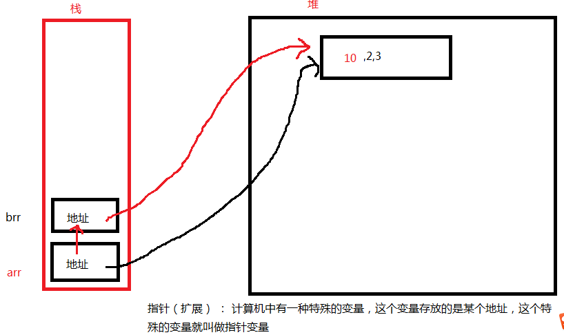

第一周
1、数据类型 number string boolean object null undefined
2、运算符和表达式
算术 ： + % （整除） ++ --
关系 ： == != === !==
逻辑 ： && || !
条件 ： ？ :
赋值 ： 变量 = 值 += -=
3、三大结构 顺序 选择 循环
4、选择
if(表达式){
语句
}else{
语句
}
多分支 ：
if(){
}else if(){
}else{
}
switch(表达式){
case 常量表达式 : 语句 ; break;
default:语句；
}
5、循环
while()
do...while()
for()
for ... in
6、函数
函数参数 ： 形参和实参
arguments 实参副本
函数的返回值
函数和事件的关系
事件三要素 ： 事件源 事件 事件处理程序
事件有哪些 ？
1、对象
对象 ：将多个信息组合起来，这样多个信息的组合 就称为一个对象
对象的特征：
对象可以动态的添加属性或功能（方法）
对象即可以有属性 也可以有方法 （功能）
对象属性和方法的调用 ： 对象.属性 或 对象.方法
方法和函数的关系 ：
方法属于函数
函数包含方法
2、构造函数
通过new关键字创建出来对象的函数，就称为构造函数
3、数组
思考 ： 计算 任意10个（没有规律）数的 和 89 80 70 60 90 92 56 100 90 98 97
数组 ： 就是一个容器 ，容器中可以存放任意多个数据 （多个数据的类型可以是任意的，一般类型保持一致）
4、数组定义
1、 var arr = []; 空数组
2、 var arr = new Array(5); 构造函数的定义方法
如果括号中只有一个数值，该数值代表的是数组的长度 通过.length 属性获取数组的长度
如果括号中是多个数值或一个字符数据，这些数据代表数组的内容
5、数组的赋值
1、定义时直接赋值
arr = [1,2,3]
2、先定义后赋值 --- 通过下标 下标 从0开始 ，数组的最大下标： 数组.length - 1
var arr = []; 或 arr = new Array();
arr[0] = 90;
arr[1] = 89;
3、通过循环为数组赋值 将 1---100 存入到数组中
var arr = [];
for(var i = 0 ; i < 100; i++){
arr[i] = i+1;
}
6、js数组特性
1、长度是可变的
2、数组的数据类型可以是任意的（一般类型要统一）
3、存放的数据可以是不连续的
4、某个下标没有赋值，默认值是undefined
7、数组应用练习
1、计算数组中所有偶数的和 奇数的和 偶数的个数 奇数的个数
2、已知数组 arr = [23,12],将数组中的两个数交换后输出
3、定义一个数组，存放6个数，输出这些数，并计算这些数据的平均数
4、输出数组中的最大数和最小数
5、定义一个含有10个元素的数组，计算数组中素数的个数
6、使用JSON形式创建一个对象{ }，该对象存储一个学生的信息，该对象包含学号、身份证、年龄、性别、所学专业等属性信息，同时该对象包含一个自我介绍的方法，用来输出该对象的所有信息
8、for in特点
1、没有循环条件
2、自动取出下标，下标从0开始到arr.length-1
3、下标类型是string类型
for .. in 一般用于遍历 数组 或 json对象
9、 测试数组(扩展)
typeof 只能测试一个数组是object类型，但不能测试这个object是不是一个Array
instanceof ：
用法： 数组名 instanceof Array 返回布尔值 如果是Array就会返回true
10、数组的操作方法
push() 向数组的尾部添加一个或多个元素 返回数组新长度值 改变原数组
pop() 删除数组中的最后一个数 返回删除的元素 改变原数组
shift() 删除数组中第一个数 改变原数组
unshift() 向数组的首部 添加一个或多个元素 改变原数组
slice(start,end) 删除从开始下标位置，到结束位置处的数据 ，结果不包括结束位置处的数据 ， 返回删除的元素 注意： 不改变原数组
splice(start,deletecount,[新元素]) 改变原数组
如果没有第三个参数 ： 表示从开始start位置处 删除指定个数 返回删除的元素
如果第三个参数存在 ， 表示 向删除元素的位置处 又添加新元素
join() 将数组转换成字符串 arr.join('-')
concat() 数组的连接 (数组合并) 合并两个或多个数组
arr.concat( brr,crr ) 将brr 和 crr 合并到arr数组的后面
reverse() 数组的翻转
12、js中的多维数组
二维 ： 由行 和 列 组成
var arr = [[1,2,3,4],[23,45,6,7],[4,5,6,7]];//三行 四列
13、栈 和 堆
栈 ： 当定义一个变量是，计算机会在内存中开辟一块存储空间来存放这个变量的值，这块空间就叫做栈 栈中一般存放的是 基本类型数据
栈的特点 ：后进先出（先进后出）
堆 ： 堆中存放的变量一般是 对象类型
地址传值 ： 一改全改

指针（扩展） ： 计算机中有一种特殊的变量，这个变量存放的是某个地址，这个特殊的变量就叫做指针变量
练习 ：
7、定义一个含有30个整型元素的数组，按顺序分别赋予从2开始的偶数；然后按顺序每五个数求出一个平均值，放在另一个数组中并输出。试编程。
8、通过循环按行顺序为一个5×5的二维数组a赋1到25的自然数，然后输出该数组的左下半三角。试编程。
1 2 3 4 5
6 7 8 9 10
11 12 13 14 15
9、输入若干个成绩存入到数组中，输入负数后退出。 统计数组平均成绩，输出低于平均成绩的分数并统计低于平均成绩的学生个数
10、

文本框输入一个数，点击推入 ，将这个数推入到红色div中 ，可以反复操作
点击弹出先弹出 后进入的数